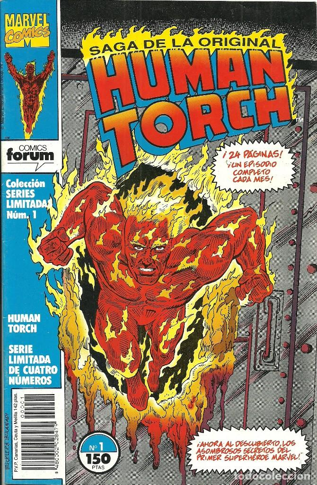
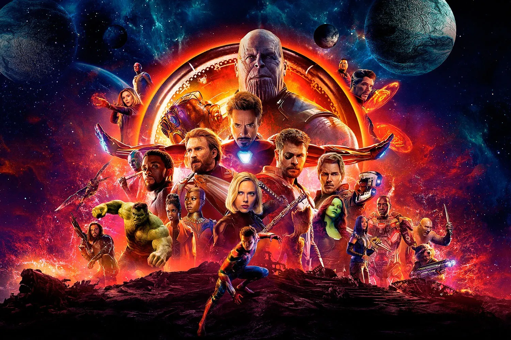
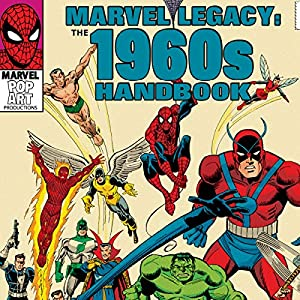
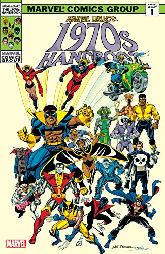

Marvel Comics es una editorial estadounidense de cómics. Es conocida por muchos como la "Casa de las Ideas" porque ha generado muchos personajes icónicos de superhéroes. Sus cómics más famosos son Fantastic Four, Spider-Man, Daredevil, Captain America, Avengers, Iron Man, Hulk, Wolverine y X-Men. La compañía ha sido una de las editoriales más grandes del género desde la década de 1960. Con sede en la ciudad de Nueva York, se incorporó en 387 Park Avenue South y sus oficinas actuales están ubicadas en 40th East 10 Avenue. El 31 de agosto de 2009, Walt Disney anunció que comprara entretenimiento de Marvel por $ 4,000 millones, casi 5000 personajes para World Disney Enterprises, Inc..
Marvel Comics fue fundada por Martin Goodman y Stan Lee en 1939 con un cambio constante de nombre. Inicialmente, fue conocido como el Red Circle Comics; aunque el nombre más común (a Marvel Comics) es un cómic oportuno y su primera publicación importante es Marvel Comics (octubre de 1939), y recibe su nombre actual en que un superhéroe apareció por primera vez en Marvel: la primera antorcha humana y el villano Namor, el hombre submarino. Ambos personajes se convirtieron en gran éxito para que la compañía lo usara de inmediato. Otro famoso superhéroe creado en estas fechas es el personaje patriótico Capitán América. En la década de 1950, la compañía, como todo el cómic estadounidense, definitivamente disminuyó debido a los resultados de la Segunda Guerra Mundial. En 1957, Marvel casi cerró la puerta debido a la bancarrota de su distribuidor. En ese momento, la compañía se llamaba Atlas Comics y publicaba historias de monstruos de ciencia ficción.

Antorcha humana.
25/11/21
Superheroes más famosos
Vision
Star Lord
La Bruja Escarlata
Doctor Strange
Hulk
Black Widow
Thor
Ironman
Capitán América
Spiderman

Los Vengadores
Los Vengadores (The Avengers: Los Avengers en Hispanoamérica y Marvel Los Avengers en España) es una película de superhéroes basada en el equipo de superhéroes de Marvel Comics del mismo nombre. También es una combinación de Iron Man, The Incredible Hulk, Iron Man 2, Thor y Captain America: The First Avenger. Es la sexta entrega del Universo Cinematográfico de Marvel y la Saga Infinity, así como la sexta y última entrega de la Fase 1. Se estrenó el 4 de mayo de 2012 en Estados Unidos.
Dirigida y coescrita por Joss Whedon y protagonizada por Robert Downey, Jr. como Anthony Stark/Iron Man, Chris Evans como Steven Rogers/Capitán América, Mark Ruffalo, quien reemplaza a Edward Norton como Bruce Banner/Hulk, Chris Hemsworth como Thor, Scarlett Johansson como Natalia Romanoff/Black Widow, Jeremy Renner como Clinton Barton/Hawkeye , Tom Hiddleston como Loki, Clark Gregg como Phillip Coulson, Cobie Smulders como Maria Hill, Stellan Skarsgård como Erik Selvig y Samuel L. Jackson como la furia de Nicholas.
La película recibió tres secuelas: Avengers: Age of Ultron se presenta en vista previa el 1 de mayo de 2015 en los Estados Unidos, Avengers: Infinity War en Preview 27 de abril de 2018 y Avengers: Premezcla final del día de abril de 2019.
El video enseña las escenas en la pelicula y a la hora de grabarla, esta pelicula es de las más exitosas y más esperadas de marvel, ha roto muchos récords, toda la audiencia fanática de los avengers vió esta pelicula, ya que es muy importante porque marca el fin de la tercera fase de superheroes de marvel y el comienzo de la cuarta fase, en la pelicula hubieron tan solo 1000 artistas para la escena de la batalla final, sin duda de las mejores peliculas que existen
Esta pelicula me gusta mucho a mi porque es la secuela de avengers infinity war que trata de que los vengadores se tienen que defender de la mayor amenaza de la galaxia que es un alien morado que piensa reuinir las 6 gemas del infinito, que son piedras poderosas que fueron forjadas al mismo tiempo que la creación del universo y cada una controla un aspecto importante del universo, la mente, el espacio, la realidad, el tiempo, el poder y la gema del alma, si el alienigena morado llamado Thanos conseguia las 6 gemas con tan solo chasquear los dedos elimina a la mitad del universo, la trama es muy buena, solo los vengadores pueden detenerlo y salvar a la mitad del universo de ser desvanecidos por un chasquido
A principios de la década de 1960, de la década de 1960, la compañía trató de regresar a la actuación, el éxito significativo con los dibujos animados de comedia se revivió hace unos años. Luego, Stan Lee y Jack Kirby, luego crearon que 4 increíbles inspirados en el éxito de DC Comics y en historias sobre los monstruos publicados en Atlas. Este cómic es el éxito total absoluto de que la compañía comenzó una larga lista de títulos, y los más populares entre ellos son definitivamente "arañas increíbles" (arañas grandes) creadas por Lee y Steve Ditko.
Founded in 2004 by Jimmy Wales and Angela Beesley Starling, hecho por fans Fuente

1960
Marvel década de los 70
En este contrato, el mercado cómico regresó en la recesión económica. La compañía ha publicado nuevos títulos en especies como terror o encantador. La Marvel intentó comprar DC, pero la compra no se detuvo porque el DC quería mantener a sus personajes más famosos en Superman y Patman. A fines de la década de 1970, el equipo creativo de Chris Clermont y el artista John Berne rebelde uno de los antiguos títulos de Marvel, X-Men formando con éxito la compañía en este período. Al final de los 70 cómics, comenzó a venderse en tiendas personalizadas.
Founded in 2004 by Jimmy Wales and Angela Beesley Starling, hecho por fans Fuente

1970
Marvel década de los 80
En el editor de 1980 de Marvel, Jim Shooter. A pesar de su controvertida personalidad, el tirador ya sabe cómo manejarlo y "tratar" muchos errores que ocurren en una sorpresa (incluida en la falsa famosa) y la producción, viendo el renacimiento creativo en la empresa. Este renacimiento incluye la institución de derechos de abogado, desde las principales publicaciones de propiedades, el establecimiento del propietario en 1982 y lanza una línea completamente nueva (incluso si el fracaso) es el nuevo universo, para celebrar el vigésimo quinto aniversario en 1986. Shooter es responsable de proporcionar a la compañía en una nueva y espaciosa cruz (Concurso de Campeonato, Guerra Secreta).
En 1981, Marvel estudió la animación: las empresas de despedie-Freleng establecieron las famosas piezas de LOONEONYY, bajo la dirección de Froreng Animator y su compañero David H. Desie. La compañía ha sido renombrada Marvel Productions Ltd. Y nunca produjo una serie de animación para televisión, como G.I. Joe, Transformers e incluso niños Jim Henson Children. En 1986, Marvel se vendió a la entretenimiento mundial, en solo tres años, en 1988, lo vendió entre Macarin y Forbes, que fueron propiedad de CEO Revlon, Ronald Perelman. Perelman tiene una empresa en el mercado de valores de Nueva York y promueve un aumento significativo en el número de empresas. Como parte del proceso, Marvel Products vendió catálogos de televisión para el entretenimiento de Saban (ganado en 2001 por Disney).
Founded in 2004 by Jimmy Wales and Angela Beesley Starling, hecho por fans Fuente
.png) ¿Qué es? y su historia
¿Qué es? y su historia.png) Superheroes más famosos
Superheroes más famosos.png) Enlaces para más información
Enlaces para más información.png) Marvel década de los 60
Marvel década de los 60.png) Marvel década de los 70
Marvel década de los 70.png) Marvel década de los 80
Marvel década de los 80